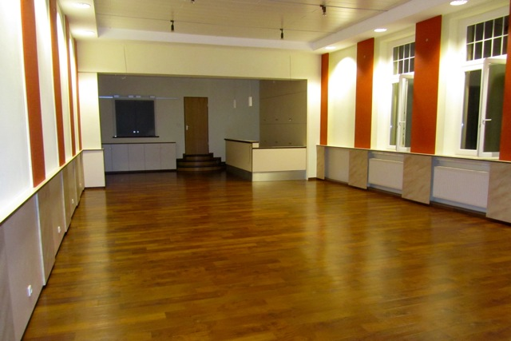

Die Renovierung unseres Gemeindeheims ist nach dreieinhalb Monaten
Bauzeit so gut wie abgeschlossen.
Wenn auch noch keine Gardinen die Fenster zieren und die Zapfanlage am Tresen auch noch nicht montiert ist, so konnten die Gläubigen nach der Rorate-Messe am 30.11.2011 als erste Nutzer im neu gestalteten Heim das gemeinsame Frühstück einnehmen.
|
 |
|
Blick in den Saal nach der Renovierung
|
Das Foto zeigt die klar gegliederte Struktur des Raumes mit den farblichen Akzenten. Die früher eichenfarbige Holzdecke ist weiß lackiert worden, der Fußboden hat eine Holzstruktur erhalten, und der Tresen ist schlichter gestaltet worden. Ein Lichtfries mit eingebauten dimmbaren Strahlern taucht den Raum in ein angenehmes Licht. Die Treppe zur Küche ist verbreitert, die Stufentiefe vergrößert und in einem schönen Halbrund angefertigt worden. Durch diese Konstruktion wird die Unfallgefahr erheblich reduziert. Statt des Rolladen in der Durchreiche zur Küche finden wir nun zwei gläserne Schiebefenster. Die neuen Schränke vor dieser Durchreiche schaffen Platz und Unterstellmöglichkeit für notwendige Gerätschaften. Die früher dunklen Schranktüren im Thekenbereich haben einen hellen Anstrich erhalten.
Besonders positiv wirkt sich die Dämmung der Decke im Tekenbereich aus, weil sie in der darüber liegenden Wohnung die Geräuschbelästigung vermindert.
Eine neue Faltschiebewand zwischen dem großen Saal und dem angrenzenden kleinen Saal (hier nicht zu sehen) wird dazu beitragen, dass beide Räume unabhängig voneinander genutzt werden können, ohne dass sich die unterschiedlichen Gruppen stören.
Be 30.11.2011

{kind=link}
{kind=link}
{kind=link}
{kind=link}
{kind=link}
{kind=link}